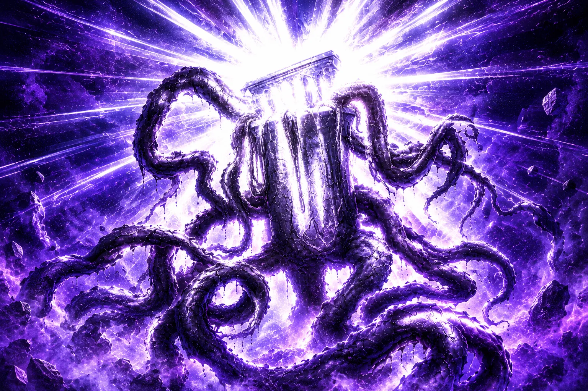
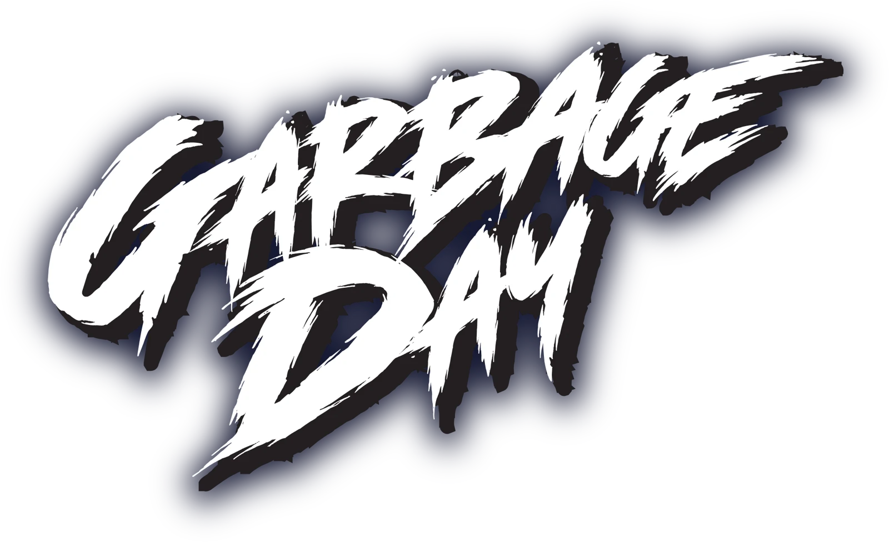
Feature film pitchA dark comedy horror film
Arrow keys, swipe, or the buttons below
Intro
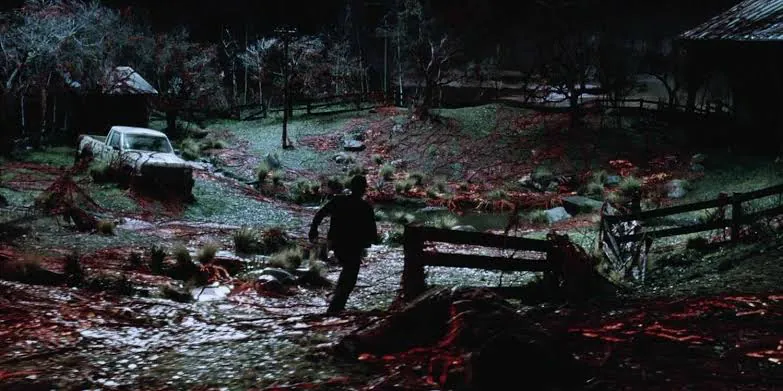
GARBAGE DAY is a dark comedy horror film about friendship, failure, and the pursuit of becoming the best version of yourself. Vinni is broke, unemployed, and perfectly content with blaming everybody for the disaster his life has become. Then he discovers something impossible… a talking trash can. Charming, lonely, and strangely supportive, the trash can quickly becomes the best friend Vinni never knew he needed. There’s only one problem. It’s hungry. For something more than trash.
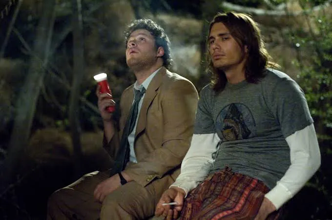
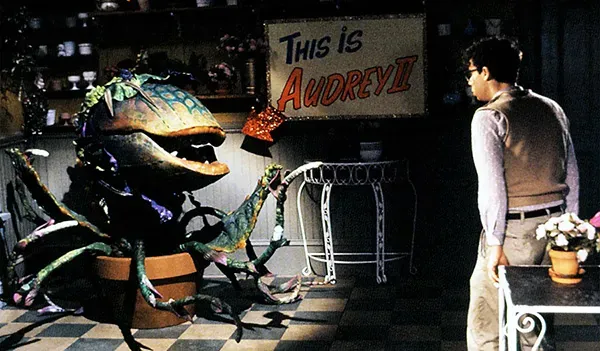
Synopsis
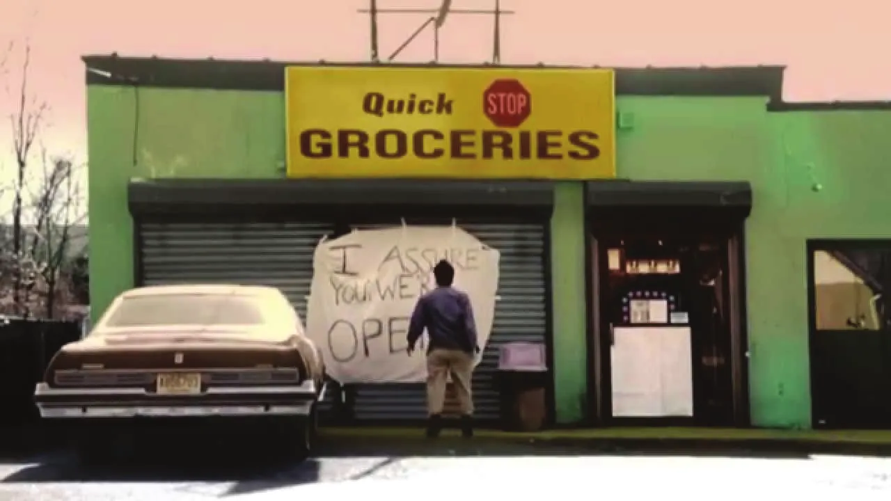
Vinni is thirty something, unemployed, months behind on rent and living in a filthy apartment with his increasingly frustrated roommate, Sam. Convinced that success is always just around the corner, Vinni spends his days watching television, smoking cigarettes, getting high and avoiding responsibility. Then he discovers a trash can that can talk.
Sophisticated, sarcastic, and speaking with a British accent, the Trash Can and Vinni form an unlikely friendship. The Trash Can listens to Vinni’s problems, encourages his budding relationship with his neighbor Emma, and gives him something he desperately needs: someone who believes in him.
Then it gets hungry. As black roots begin spreading beneath the trash can, the creatures appetite grows increasingly disturbing. Vinni realizes his new friend isn’t what it appears to be. When the Trash Can consumes Sam and kidnaps Emma, Vinni is forced to take responsibility.
Armed with a katana, a flamethrower, and his dangerously enthusiastic drug dealer Razor, Vinni descends into the impossible world living inside the trash can to save Emma and confront the creature he once called his friend.
What begins as the story of a loser discovering a talking trash can becomes a surreal bloody battle between a man desperate to change and a monster determined to never let him go.
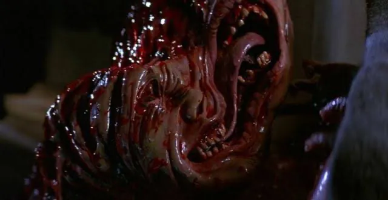
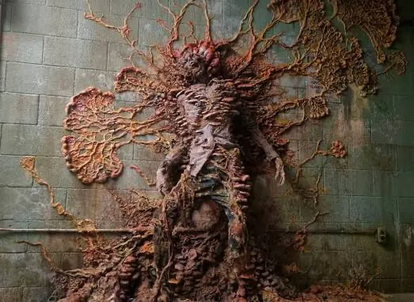
Tone
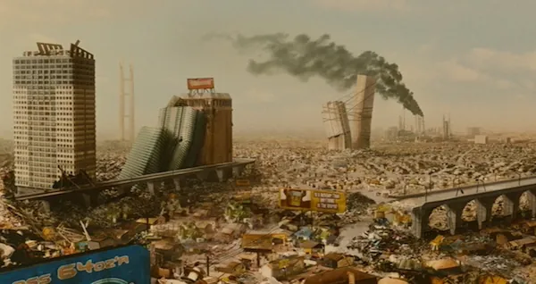
Absurd, Hilarious, Violent, Weirdly Heartfelt.
GARBAGE DAY sits between deadpan comedy and grotesque horror. The humor comes from characters treating impossible situations with complete sincerity - whether its Vinni is trying to monetize a talking trash can, Razor proudly showing off his flamethrower, or an ancient supernatural creature complaining Chinese food is “far too seasoned”. As the story progresses, the world becomes more disturbing. Black roots crawl through concrete. Beautiful hypnotic lights hide something predatory. Human bodies disappear into an impossible void. The ordinary neighborhood garage slowly transforms into an entrance to another world.
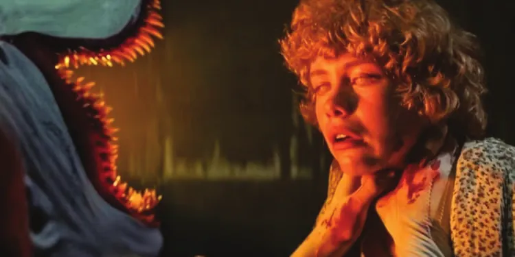
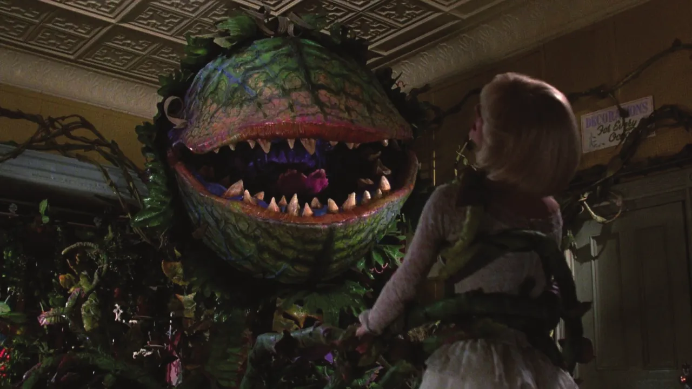
Visual
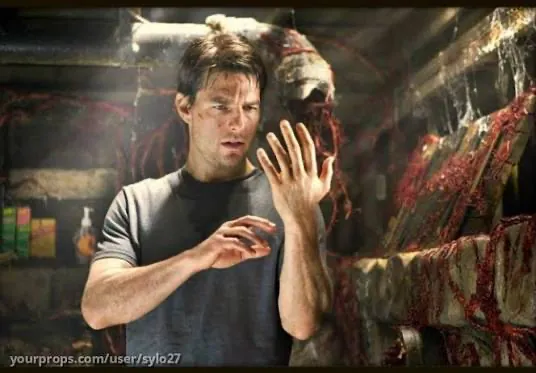
GARBAGE DAY is dirty, colorful, and faded. A cramped apartment overflowing with junk, cigarette smoke, dirty dishes, and laundry. Then something beautiful grows from the filth. The Trash Can emits impossible colors - deep blues, warm golds, rich violets moving like liquid stained glass. Inside is an endless junkyard beneath a dead sky: mountains of abandoned cars, televisions, and pieces of forgotten lives. The deeper Vinni enters the creatures world, the further his reality deteriorates.
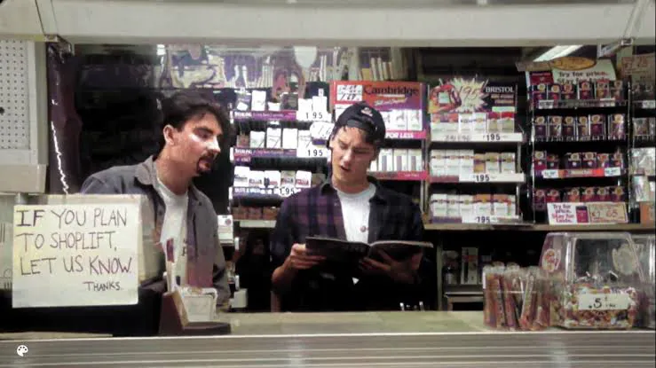
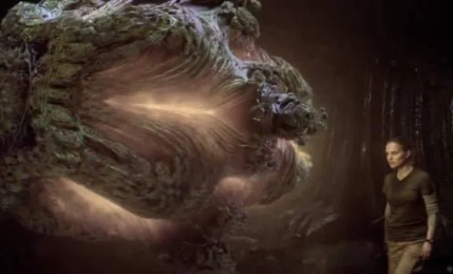
Impact
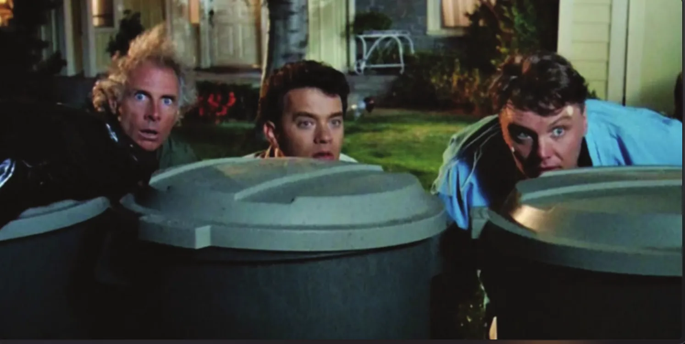
At its core, GARBAGE DAY is about growing up. Vinni has spent his life avoiding responsibility and waiting for something to come fix all his problems. When the Trash Can comes along, he thinks he finally found it. Instead, it forces him to confront the person he’s become and decide who and what really matters to him. Beneath the comedy, horror, and absurdity, GARBAGE DAY is a story about friendship, responsibility, and striving for a better version of yourself.
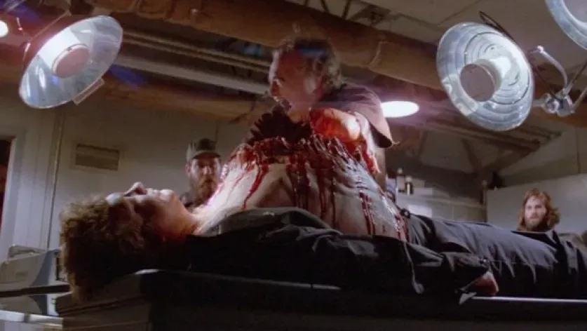
Vinni
Lazy, funny, and always looking for the easy way out. Vinni is broke, unemployed, in debt, and convinced his next big break is right around the corner. When he discovers the trash can, he’s convinced his life will change. Instead, it forces him to face his problems and take responsibility for the people he cares about.
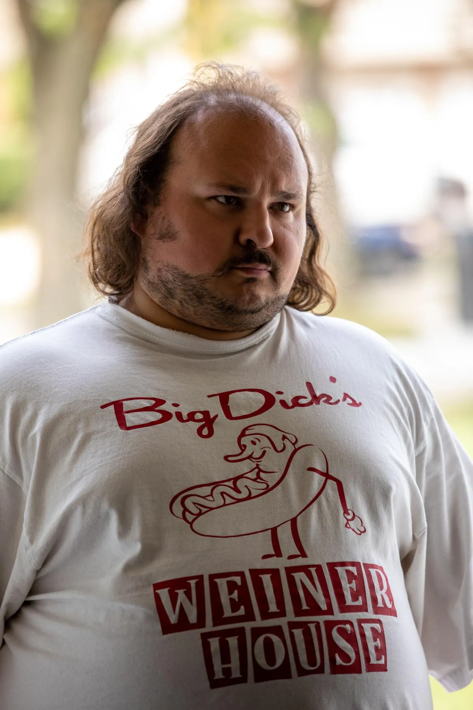
Sam
Vinni’s roommate and best friend. Sam is responsible, hardworking, and constantly frustrated with Vinni’s lack of direction. But underneath all the arguing, he genuinely cares about him. He pushes Vinni to grow up and get his life together even when Vinni doesn’t want to hear it.
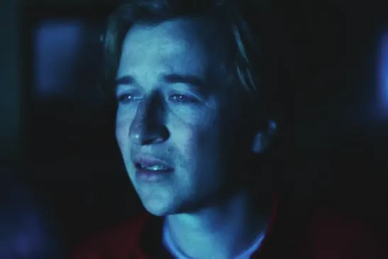
The Trash Can
Polite. Intelligent. Lonely. Manipulative. An impossibly sophisticated creature with a British accent, dry sense of humor, and desperate desire for companionship. As roots spread and its appetite grows, affection becomes possession and friendship becomes dependency.
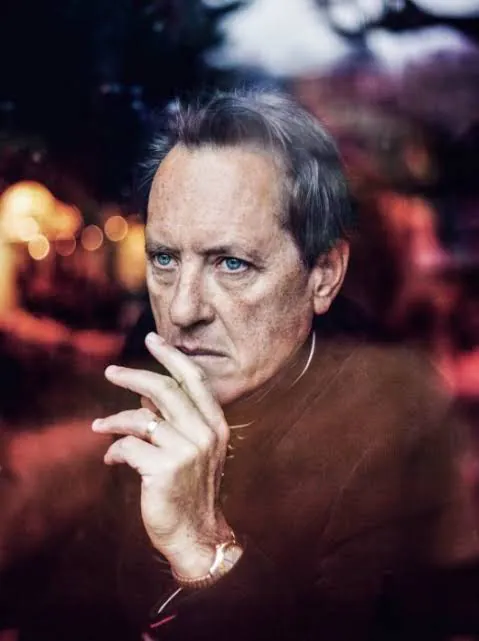
Emma
Warm, funny, alternative, and down to earth. Emma lives in Vinni’s apartment building with her dog, Charlie. She sees something good in Vinni that he doesn’t always see in himself. As they grow closer, Emma gives Vinni something worth fighting for and becomes an important part of his journey toward finally getting his shit together.
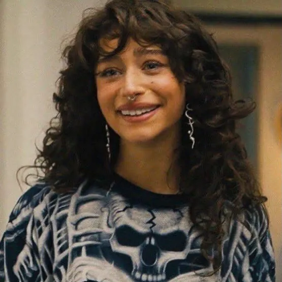
Razor
Vinni’s drug dealer and friend. Tattooed, gold toothed, and obsessed with weapons. Razor is cool, unpredictable, and always ready for a fight. When Vinni needs help taking down the Trash Can, Razor doesn’t hesitate. He grabs his weapons and joins the fight.
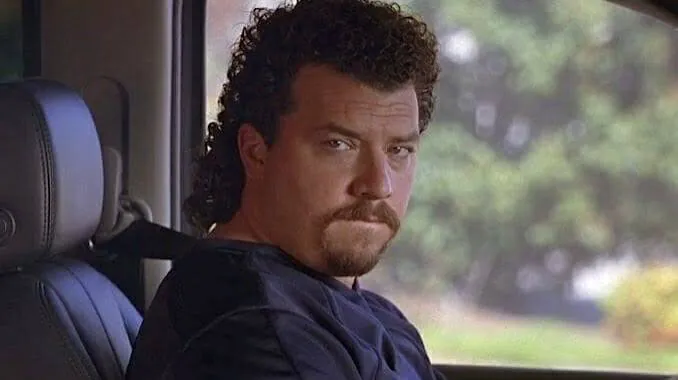
Greta
Vinni’s elderly neighbor. Greta is loud, stubborn, and always complaining about something. She is not afraid to speak her mind and stand in anyone’s way, even when she probably should.
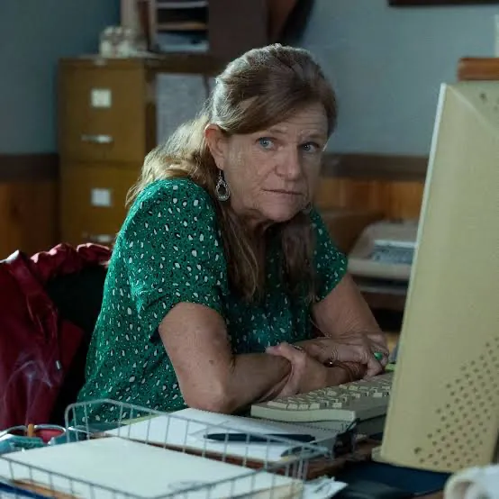
Anthony Perkins
A self help guru and podcaster Vinni constantly watches on TV. Anthony preaches about success, discipline, and taking responsibility for your life. His advice follows Vinni throughout the story and eventually pushes him to take action.
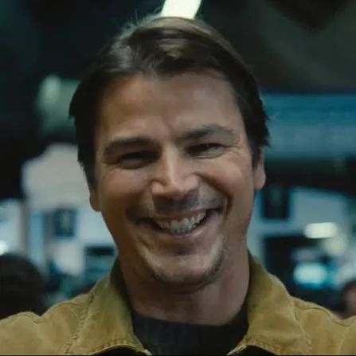
Concept Art
Select a sketch to view it larger.